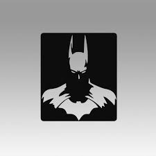

CURRICULUM VITAE DE BRUCE WAYNE
DATOS PERSONALES
- Nombre completo: Bruce Wayne
- Fecha de nacimiento: 01/05/1939
- Lugar de nacimiento: Gotham City
FORMACIÓN ACADÉMICA
- 1956-1961: Universidad del espantapájaros
Licenciatura en aeronaútica
- 1952-1956: Secundario Gotham
Bachiller con especialización en trucos
EXPERIENCIA LABORAL
- 1975-1985: Desocupado
Sin trabajo porquer se me rompió el batimovil
- 1965-1975: Cazavillanos y demás chusma
Atrapé a Gatubela a joker a Victor Fries lo dejé porque se me congeló la capa
- 1962-1965: Aprendiz de superhéroes
Hice pasantía con Superman. Opté por usar mascara porque no pude aprender a peinarme el rulo